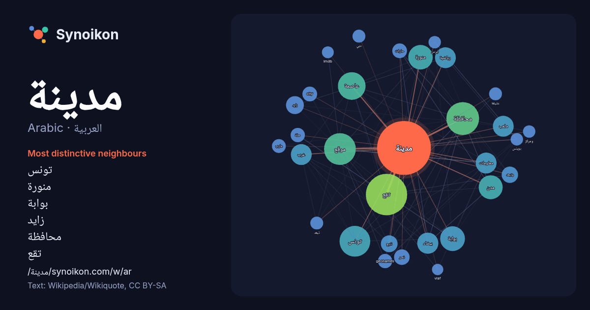

العربية · Arabic · word of the day list
مدينة
“city” · The words found around it in 1415 instances from Arabic Wikipedia, Wikiquote.

Most distinctive neighbours
- تونس 42×
- منورة 38×
- بوابة 36×
- زايد 23×
- محافظة 23×
- تقع 22×
- عاصمة 19×
- وتبعد 19×
- موقع 19×
- رياضية 18×
- بيضاء 18×
- city 17×
- ملعب 17×
- geonames 17×
- حارات 17×
- مدن 15×
- مارب 15×
- عتيقة 13×
- نصر 13×
- imdb 11×
× = how many times more often than in general Arabic Wikipedia text.
Most frequent neighbours
- تقع 134
- محافظة 84
- موقع 79
- تونس 74
- عاصمة 60
- مركز 50
- منطقة 50
- بوابة 48
- منورة 47
- مدن 45
- احدي 43
- مقاطعة 43
- شرق 40
- جنوب 37
- بيضاء 35
- رياضية 34
- سكان 34
- شمال 34
- غرب 34
- معلومات 34
In context
- المدينة عن القرية والبادية في أنها أعلى منهما في الكثافة السكانية، واحتوائها على أغلب ضرويات الحياة والمرافق الخدماتية. خدمات بلدية دولة مدينة مدينة بطيئة Wikipedia snippets · مدينة
- دبي هي مدينة وعاصمة امارة دبي في الإمارات العربية المتحدة. وهي تقع على الساحل الجنوبي الشرقي للخليج العربي وهي واحدة من الإمارات السبع التي تشكل الدولة Wikipedia snippets · دبي
- النصر ساحة المنجي بالي ساحة غامبيتا ساحة رمضان باي في كومنز مواد ذات صلة بـ قائمة ساحات مدينة تونس. بوابة جغرافيا بوابة تونس بوابة عمارة بوابة مدينة تونس Wikipedia snippets · قائمة ساحات مدينة تونس
- مركزًا مهمًا للدبلوماسية الدولية، وتوصف أحيانًا بأنها أهم مدينة في العالم وعاصمة العالم. وتعتبر مدينة نيويورك أحد أهم مراكز التجارة والمال في العالم، فهي عاصمة Wikipedia snippets · نيويورك
- يونا (مدينة) Wikipedia snippets · يونا (مدينة)
- جُدَّة هي مدينة ومركز محافظة جدة إحدى محافظات منطقة مكة المكرمة، وتقع في غرب المملكة العربية السعودية على ساحل البحر الأحمر. تبعد المدينة 949 كم عن العاصمة Wikipedia snippets · جدة
- مدينة الملك عبد الله الثاني هي مدينة رياضية تقع في العاصمة الأردنية عمان في منطقة القويسمة. "مدينة الملك عبدالله الثاني الرياضية تستقبل كبرى الأحداث الكروية" Wikipedia snippets · مدينة الملك عبد الله الثاني
- مدينة عبود هي مدينة سودانية تقع في محافظة المناقل وتقع تماما بوسط مشروع الجزيرة بالسودان. يعود تاريخ المدينة إلي ما قبل سلطنة سنار. تتميز مدينة عبود بمناخ Wikipedia snippets · عبود (السودان)
More Arabic words
- أغنية
- إله
- تاريخ
- جبل
- جرس
- جزيرة
- جسر
- حديقة
- حصان
- حقيقة
- حياة
- خبز
- خريطة
- خريف
- ذهب
- زمن
- ساعة
- شاي
- شتاء
- صحة
- صحراء
- صمت
- صيف
- طبيعة
- طريق
- طعام
- ظل
- عائلة
- عاصفة
- عسل
- علم
- عمل
- غابة
- فن
- قطار
- قطة
- قلب
- قوة
- كلب
- لغة
- ماء
- مال
- مرآة
- مطر
- ملح
- مناخ
- موت
- نجم
- والدة
Precomputed on 2026-10-09 with default settings (±5 words, medium corpus). The interactive map can refresh it with live data.